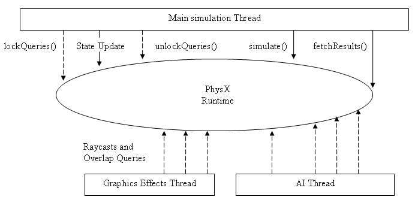

Thread Safe Raycasting, Sweep and Overlap
Queries
In general, it is not safe to use the NVIDIA PhysX API for more than one
thread. However, there are a few exceptions, in particular the APIs
designed to support simulation across multiple threads (see the Threading Interface page for
details) and a subset of the raycasting/sweep/overlap queries. It is also
safe to retrieve the user pointer and names associated with shapes as
long as they are read-only.
The motivation for making these tests thread safe is
that they are often used for AI and graphics effects, which may be
performed on separate threads. See Raycasting,
Sweep API,
and Overlap Queries for more
details concerning these functions.

The following queries are thread safe:
- NxScene::raycastAnyBounds()
- NxScene::raycastAnyShape()
- NxScene::raycastAllBounds()
- NxScene::raycastAllShapes()
- NxScene::raycastClosestBounds()
- NxScene::raycastClosestShape()
- NxScene::linearOBBSweep()
- NxScene::linearCapsuleSweep()
- NxActor::linearSweep()
- NxScene::overlapSphereShapes()
- NxScene::overlapAABBShapes()
- NxScene::overlapOBBShapes()
- NxScene::overlapCapsuleShapes()
- NxScene::cullShapes()
- NxScene::checkOverlapSphere()
- NxScene::checkOverlapAABB()
- NxScene::checkOverlapOBB()
- NxScene::checkOverlapCapsule()
Queries which are NOT thread safe are listed below:
- NxShape::raycast()
- NxShape::checkOverlapSphere()
- NxShape::checkOverlapOBB()
- NxShape::checkOverlapAABB()
- NxTriangleMeshShape::overlapAABBTriangles()
- NxTriangleMeshShape::getTriangle()
NOTE: Be careful when changing
states which will affect the results of a raycast or overlap query. For
example, if filtering constants are modified half way through a query,
the results returned will be inconsistent. To facilitate safe
modification of state, NxScene exposes a pair of functions to prevent
raycasts from running while state is being modified:
- NxScene::lockQueries()
- NxScene::unlockQueries()
By default, the SDK acquires a mutex/critical section with the lockQueries() method,
which is released when unlockQueries() is called. The number of
calls to lockQueries() must match a corresponding number of calls
to unlockQueries().
Example
gScene->lockQueries();
gMyShapeA->setGroupsMask(newMaskA);
gMyShapeA->setFlag(NX_SF_DISABLE_RAYCASTING, true);
gMyShapeB->setGroupsMask(newMaskB);
gScene->unlockQueries();
The following list contains state updates which must be protected by lockQueries():
- Shape groups
- Shape flags
- Shape groups mask
- Shape geometry changes
- Shape pose changes
NOTE: It is not recommended to change
the state while running a simulation, as changes may lead to
unexpected physical behavior. For example, disabling collisions between
a box and plane when the box is resting on the plane will not cause the
box to fall through it.
Overlap queries with individual shapes were not made thread safe
as the overhead associated with doing so can become significant.
Performance
There is a memory overhead per additional thread which enters the SDK
to perform a raycast, since each thread must allocate working buffers.
Some of this overhead can be shared if the thread also takes part in
multi threaded simulation (see the Threading
Interface page).
A mutex was chosen to protect raycasting because, in most cases, it
yields better performance and less overhead than a reader/writer lock. The exception occurs if very heavy raycasting is
performed from many threads.
Customers with source can instead select the reader/writer lock on
platforms which are statically linked, such as the XBox 360 (see
NxReaderWriterLock.h).
API Reference
Copyright © 2008 NVIDIA Corporation, 2701 San Tomas Expressway, Santa Clara, CA 95050 U.S.A. All rights reserved. www.nvidia.com